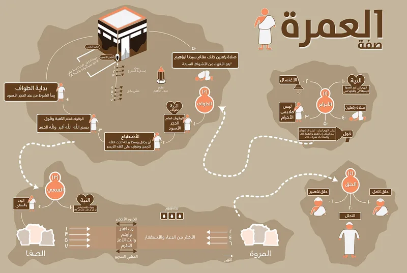

مناسك العمرة
اتبع خطوات المناسك التالية بالترتيب. اضغط على كل رمز لعرض مزيد من التفاصيل والإرشادات.
لمعرفة مناسك العمرة بشكل مفصّل وبالصور والفيديوهات، احمل تطبيق المطوف الآن:
حمل الآندليلك للعمرة
نقدم لك دليلاً شاملاً وتوجيهات عملية خطوة بخطوة لتسهيل أداء مناسك العمرة بيسر وطمأنينة. يشتمل هذا الدليل على شرح مفصل للمواقيت، وكيفية الإحرام، وسنن الطواف والسعي، بالإضافة إلى أهم الأدعية المستحبة والنصائح الصحية والعملية لضمان رحلة مريحة وآمنة لك ولعائلتك.
احرص على قراءة الدليل جيداً والتخطيط المسبق لرحلتك لتركز طاقاتك وجهودك في العبادة والتقرب إلى الله عز وجل.
